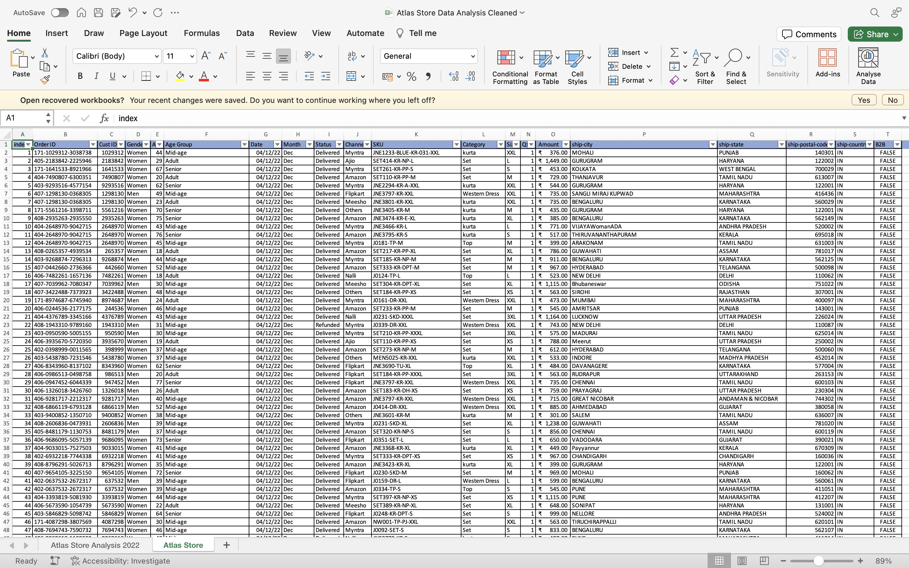
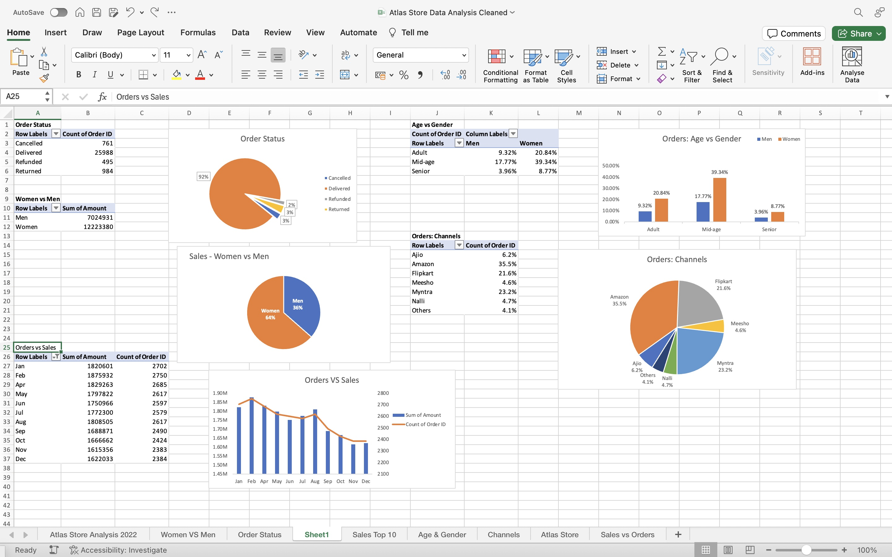
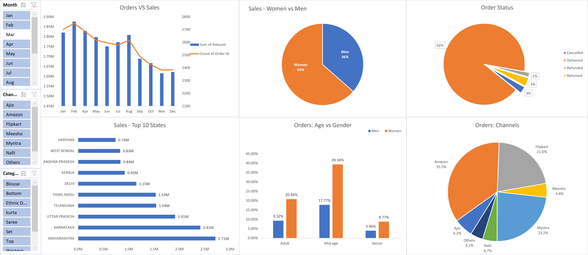

Project Details
Goal
The store wants to create an annual report for 2022. This analysis will help the store understand the existing customers and grow sales in 2023.
Download from GitHub!Setup
To ensure the accuracy of my analysis, I implemented a rigorous data cleaning process. This involved elminating duplicate and redundant entries that could skew the results. I enhanced the readability by replacing unclear codes ("m" and "w") with more descriptive labels ("men" and "women"). I created Age Group to facilitate visualization and analysis of trends across different age segments. I addressed missing values and data types by ensuring all data points were present and in the appropriate format for accurate analysis.
Fig 1. This image shows the dataset after it was cleaned.
Through a meticulous data cleaning process, I ensured the data was properly formatted and ready for analysis. This process eliminated duplicates and inconsistencies that could have skewed the results.
Analysis
Now that we have clean data, we can perform exploratory data analysis to gain insights and patterns in the data.
Business Questions:
- What is the comparison the sales and orders?
- Which month got the highest sales and orders in 2022?
- Who had a higher purchasing trend - men or women?
- What are the various order status?
- List top 10 states contributing to the most sales.
- What is the relation between age and gender based on number?
- Which channel is contributes to the maximum sales?
- What is the highest selling Category?
By answering these questions, the Atlas store can develop a better understanding of their ideal customer and tailor their marketing strategies to attract more of these customers.
Data Exploration
I used the customer data to create pivot tables that grouped the customers based on different criteria. Using these groups, I created charts that show key insights. Additionally, differnt functions were used to perform calculations.
Fig 2. This image shows the different pivot tables and charts.
For clear and comprehensive data visualization, I created an interactive dashboard showcasing all the relevant charts. This dashboard goes a step further by incorporating a slicer, allowing users to effortlessly filter the data based on specific criteria. This interactive element empowers users to identify customer segments most likely to purchase from Atlas stores, facilitating targeted marketing strategies.
Fig 3. This image shows the Atlas store Sales Dashboard.
Key Findings
Using the dashboard, we were able to determine the following insights:
- Maharashtra, Karnataka, Uttar Pradesh, Telangana and Tamil Nadu are the top 5 states contributing to the sales of Atlas store.(~35%)
- Women are more likely to make a purchase as compared to men.(~65%)
- Adult age group i.e. (30-49 years) make the maximum purchase at Atlas store (~50%)
- Amazon, Flipkart and Myntra channels are maximum to contribute to the sales (~80%)
Recommendations
Based on these findings, the business can implement the following actionable steps to improve sales:
- Target marketing efforts towards the Adult age group i.e. (30-49 years), which is the largest group of buyers. This can be done through targeted advertisements, promotions, and events.
- Cater to the needs and interests of customers in specifically Maharashtra, Karnataka and Uttar Pradesh with the ads or discounts.
- Focus sales efforts on Amazon, Flipkart and Myntra. This can involve increasing inventory and offering promotions specific to this website channels.
In conclusion, this analysis unveils valuable insights into the demographics and preferences of Atlas Store's customers. By leveraging these findings, the business can unlock significant sales opportunities. Here are some actionable steps: develop targeted marketing campaigns that resonate with specific customer segments, tailor product offerings to better align with customer preferences, and optimize store layout and product placement to enhance customer experience. By implementing these data-driven strategies, Atlas Store can effectively cater to the needs and interests of its target market, fostering customer loyalty and driving long-term growth.